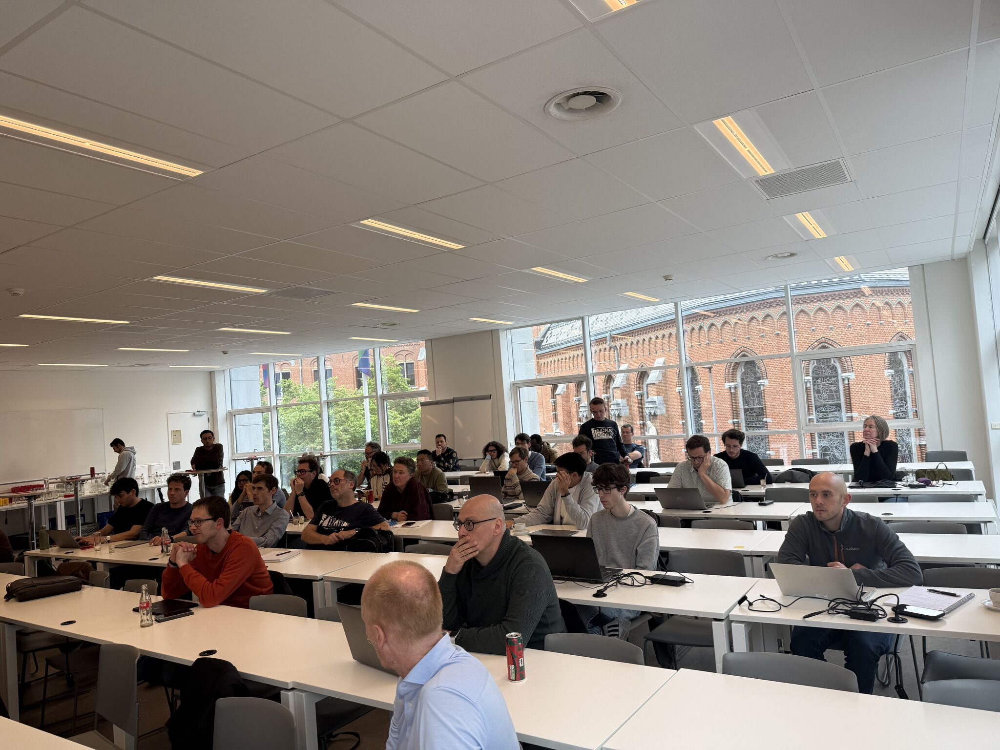
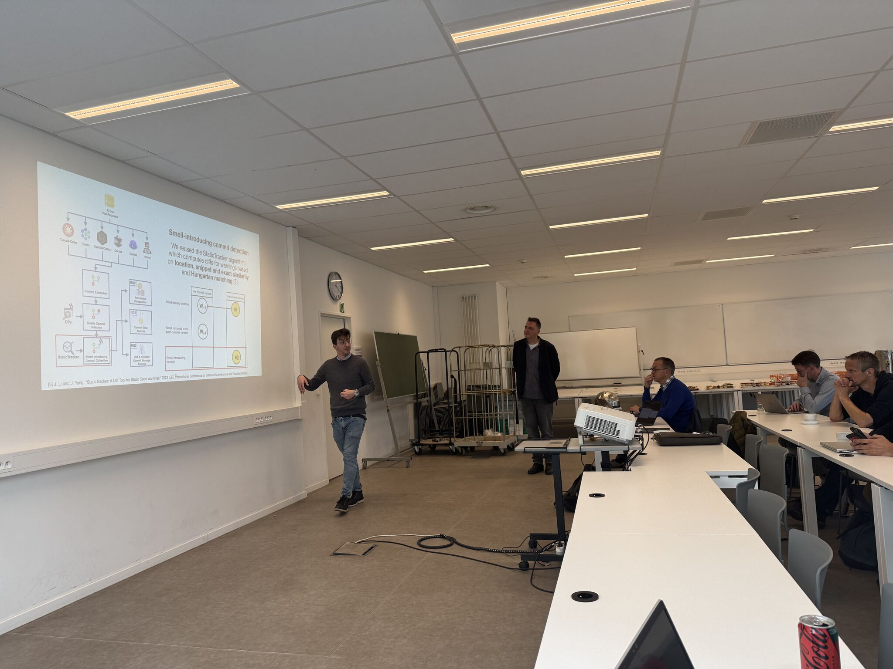
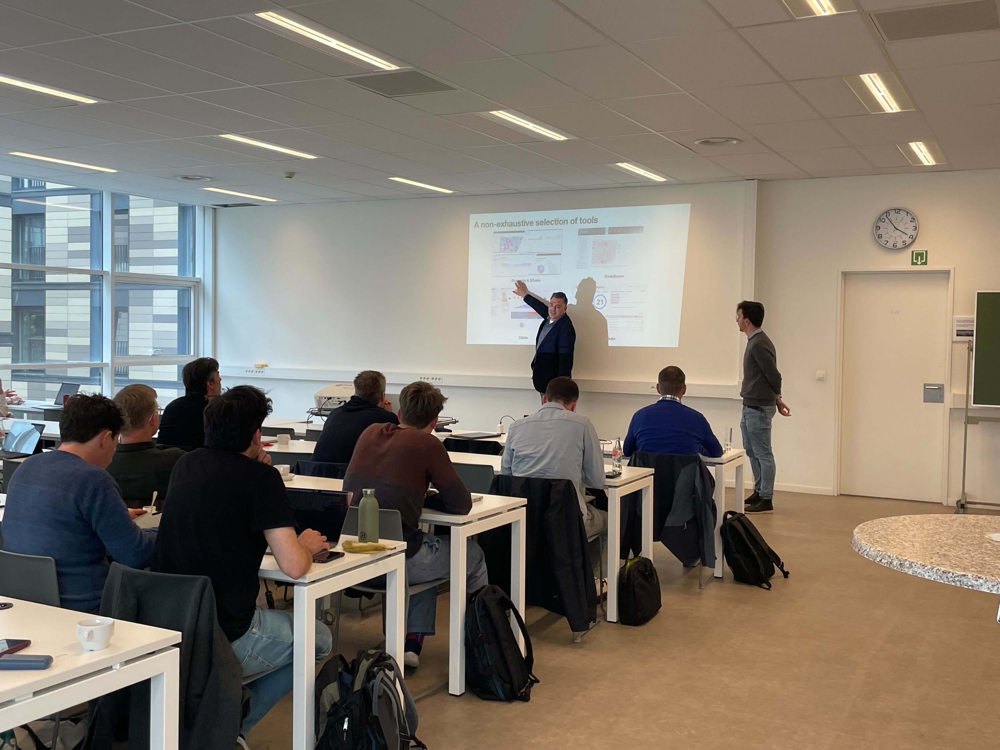
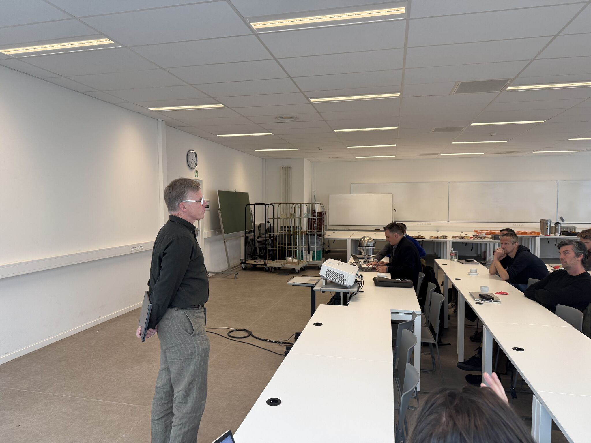

Past Event
Secure Software Engineering in a GenAI World
Dive into the future of coding with tips to keep your software safe in the wild world of GenAI.
Overview
About the Event
This event explored the current landscape of AI-based coding assistants, discussing both their significant advantages in productivity and the emerging security risks they introduce to the software development lifecycle.
Industry experts and academic researchers from the CodeGuard consortium came together to discuss practical approaches for adopting these generative AI technologies safely. The session provided actionable guidelines for professional software development workflows, ensuring that speed and innovation do not come at the cost of security and robustness.
Schedule
Agenda
| Time | Session & Details |
|---|---|
| 12:00 - 14:00 | Project Kickoff for the Advisory Board |
| 14:00 | Coffee and Welcome |
| 14:30 - 14:50 |
Introduction to LLM‑Based Code Assistants | Bert Lagaisse
An introductory overview of
LLM‑based coding assistants and their evolution from code completion to chat‑based tools and agentic
AI, setting the conceptual framework for the sessions that follow.
|
| 14:50 - 15:10 |
Vibe Coding a Game with Cursor | Ingmar Malfait
A concrete case study showing vibe
coding in practice through the development of a game using Cursor, focusing on visual logic,
iterative feedback, and expressing game rules through intent rather than low‑level implementation
details.
|
| 15:10 - 15:30 |
Harness Engineering for Coding | Koen Handekyn
A practical example of agentic AI
applied to software engineering tasks, illustrating how autonomous, tool‑using AI agents can plan
and execute multi‑step development activities.
|
| 15:30 - 16:00 |
Code Smells in an AI‑Supported Workflow | Coen De Roover
An analysis of how AI‑generated
suggestions influence code structure and quality, with a focus on recurring code smells and their
impact on long‑term maintainability.
|
| 16:00 - 16:15 |
Security Risks: Myths and Scientific Evidence | Bert Lagaisse
A clear distinction between common
fears, emotions and rumours around AI‑generated code, and what scientific research actually shows
about security risks and vulnerabilities.
|
| 16:15 - 16:45 |
Security Quality: Findings From Empirical Studies | Coen De
Roover
Presentation of empirical research
results on the security properties of AI‑generated code, including recurring vulnerability patterns
and differences between tools.
|
| 16:45 - 17:00 |
Project Planning and Next Steps
Brief overview of the CODEGUARD
project planning, upcoming workshops, and opportunities for industry participation.
|
| 17:00 - 18:00 | Reception & Networking |
Memories
Photo Gallery
A few snapshots from our engaging sessions and discussions.



